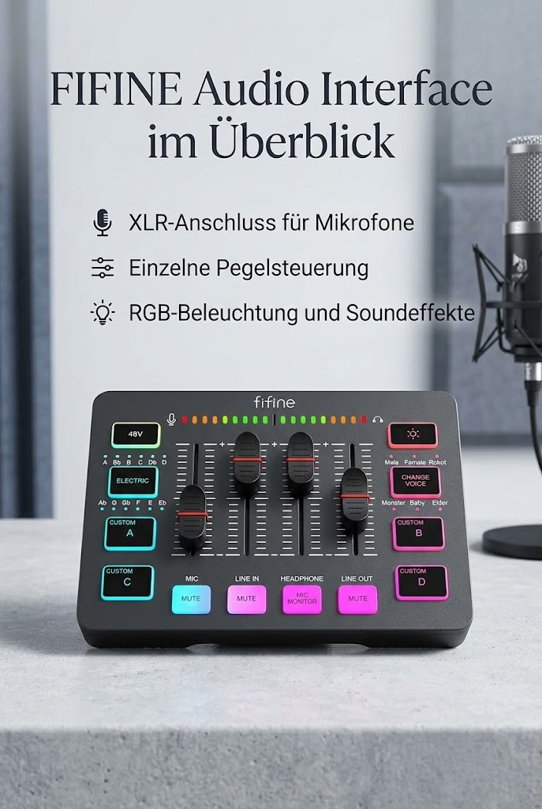

FIFINE Gaming Audio Mixer für PC, RGB Soundkarte für XLR Mikrofon
FIFINE
FIFINE Gaming Audio Mixer für PC, RGB Soundkarte für XLR Mikrofon, Audio Interface für Streaming Musiker, Mischpult für Gamer Creators Live YouTube, Individuelle Steuerung, Voice Changer

Angaben des Herstellers
- [XLR Mikrofoneingang] Ein XLR-Mikrofoneingang ist auf dem Gaming-Audiomixer vorhanden, was die Audioqualität mit deinem XLR-Setup verbessert. Der XLR-Mixer ist ein Schritt nach vorn, um dein Live-Streaming zu verbessern. Der eingebaute 48V-Phantomspeisung des Audio-Mixers eröffnet mehr Möglichkeiten für Mikrofone. Nutze ihn direkt mit deinem Kondensatormikrofon, ohne zusätzliche Peripheriegeräte verwenden zu müssen.
- [Einzeln Steuerbare Kanäle] Der Gaming-Audiomixer für die Aufnahme mit einem Mikrofon mit einem sanften Lautstärke-Schieberegler hebt deine Streaming-Aufnahmen auf ein ganz neues Level mit vollem Genuss. Vier unabhängige Kanäle auf dem DJ-Mixer bieten individuelle Kontrolle über die Lautstärke der MIKROFON-, LINE-IN-, KOPFHÖRER- und LINE-OUT-Kanäle. Konfigurierbar auf dem PC-Audiomixer anstelle der alleinigen Bedienung über deine Spiel- oder Streaming-Software.
- [Stummschaltung, Überwachung und Soundeffekte] Die Stummschalt- und Überwachungstasten vorne, nicht hinten, erleichtern die Nutzung des Audio-Interfaces. Der Soundmixer unterstützt vier vorab aufgezeichnete benutzerdefinierte Tasten, die auf Knopfdruck aufgezeichnet und aktiviert werden können, um mehr Zeit in der Nachbearbeitung zu sparen. Sechs Arten von Stimmveränderungsmodi ändern deinen Ausgabe-Stil. Zwölf Auto-Tune-Modi verändern den Ton deiner Stimme.
- [Steuerbares Vibrant RGB] Die RGB-Taste auf dem Audio-Mixer DJ passt zu verschiedenen Live-Streaming-Themen. Die Lichter auf dem Videomixer sind lebendig, aber nicht hart für die Augen. Ein fließender oder eingefrorener RGB-Farbenwechsel in einem angemessenen Tempo präsentiert einen starken Eindruck als "Lichtshow" für dein Publikum. Selbst ein Streaming-Equipment-Zubehör wird nicht langweilig aussehen bei der Videoproduktion.
- [Einfache Verwendung für Mehrere Szenen] Der Mixer für Streamer verfügt über einfache und intuitive Audioanschlüsse, um zwei PC-Einstellungen oder Audio-Mischungen zu unterstützen und die Musik-, Spiel- oder Audioeinstellungen physisch auszubalancieren. Die Plug-and-Play-Lösung funktioniert gut mit Mac OS/Windows. Der Audio-Mixer ist mit zwei Eingangs- und zwei Ausgangsschnittstellen (Mikrofon und Line-In, Kopfhörer und Line-Out) sowie einer Headset-Schnittstelle ausgestattet.
- [Technische Spezifikationen & Kompatibilität]: Frequenzgang (Mikrofon-/Line-In sowie Kopfhörer-/Line-Out): 20 Hz – 20 kHz; XLR-Mikrofoneingang, 3,5-mm-Kopfhörerausgang, 3,5-mm-Line-In / Line-Out; kompatibel mit Windows 7/8/10 (32/64-Bit) und Android (Type-C-Geräte empfohlen).
Werbung. Diese Seite enthält Partnerlinks: Als Amazon-Partner verdiene ich an qualifizierten Käufen. Für dich ändert sich nichts am Preis. Preise und Verfügbarkeit stehen bei Amazon und ändern sich laufend.